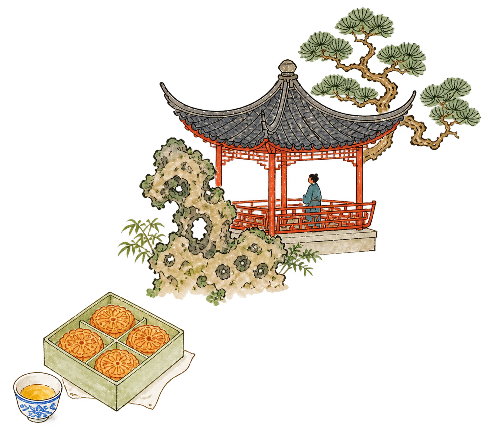
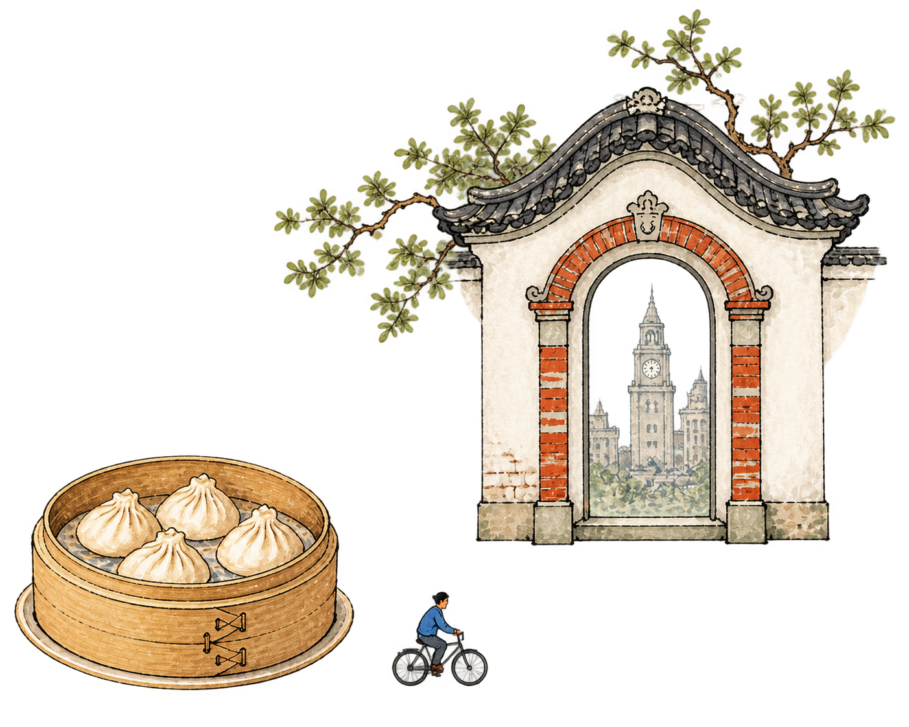
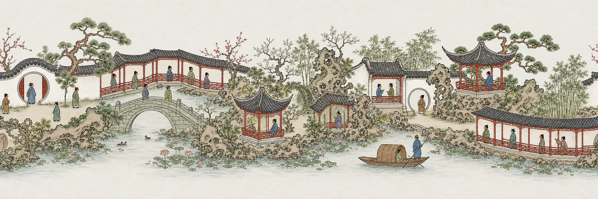

Your trip,
your rhythm.
Shape every day around your pace, interests and the way you actually like to move.

SUZHOU · GARDENS & TEA
SHANGHAI · LANES & BITESA better way to
MORE THAN SIGHTSEEING, IT’S A TRUE DIVE INTO CHINESE CULTURE.
Shape every day around your pace, interests and the way you actually like to move.
Discover, organize and refine the trip without jumping between a dozen planning tools.
Understand neighborhoods, architecture and local context instead of collecting pins.
Rebuild routes around weather, opening hours and whatever changes along the way.

Less planning.
More being there.
将故宫空间序列、中轴线秩序与胡同生活体验，读成一条皇城叙事。
来自首页瀑布流与行程推荐的收藏内容
还没有收藏。在首页瀑布流或右侧行程推荐点 ♥ 即可加入这里。
展览联线路线 · 每条路线包含的城市印象与具体景点
所有规划过的行程卡片，点进查看可编辑详情
还没有行程。在对话里规划，或点「新建行程」生成一张。